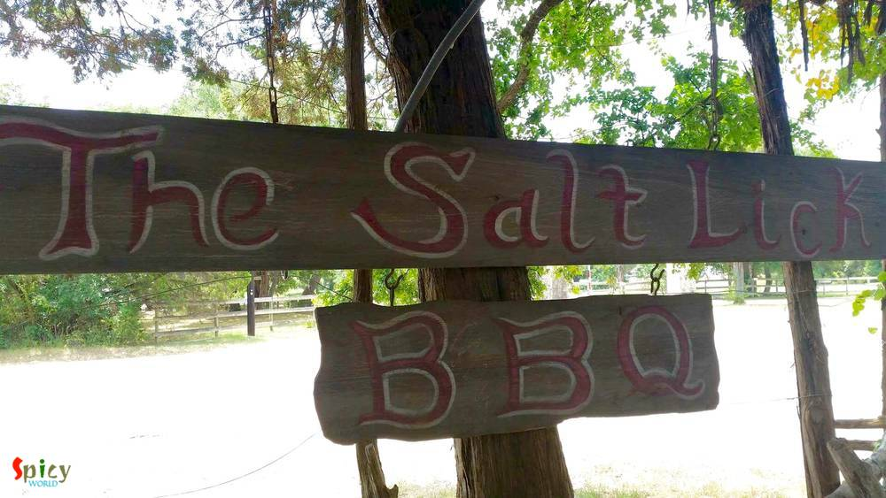
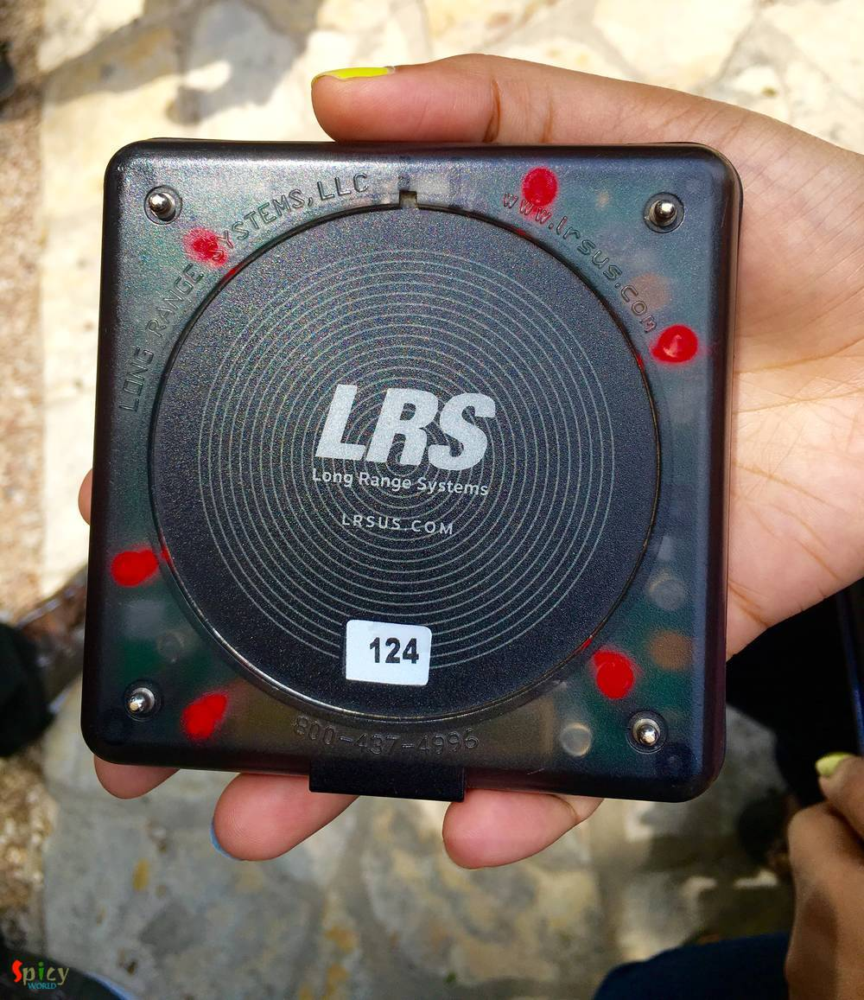
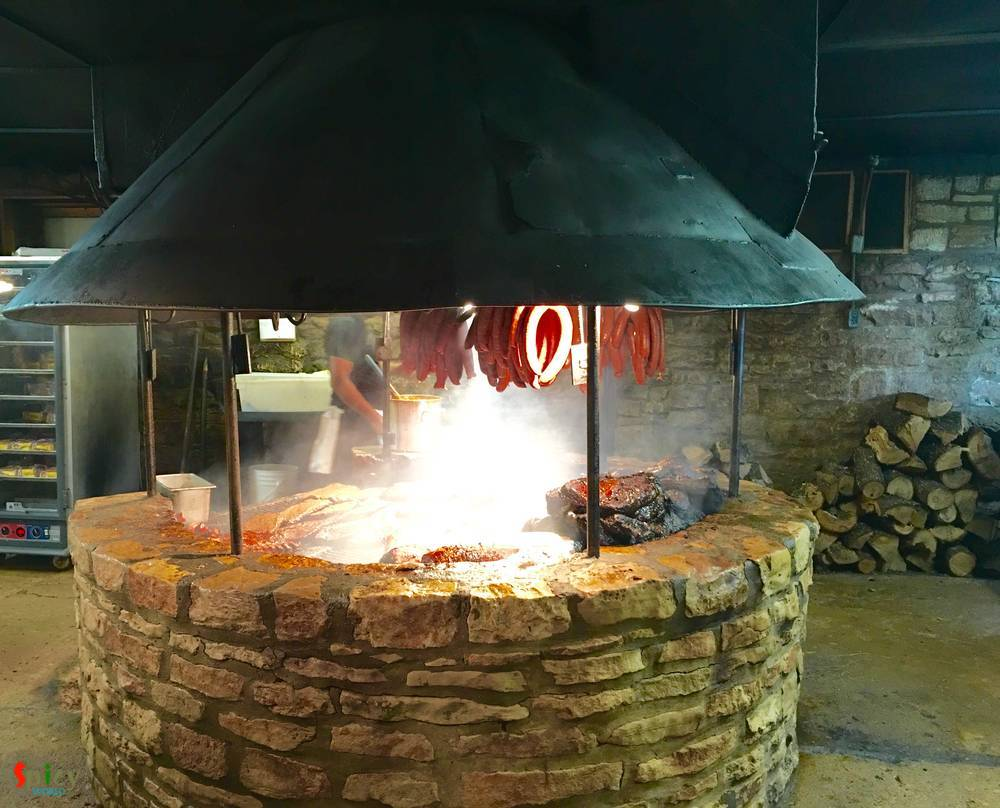
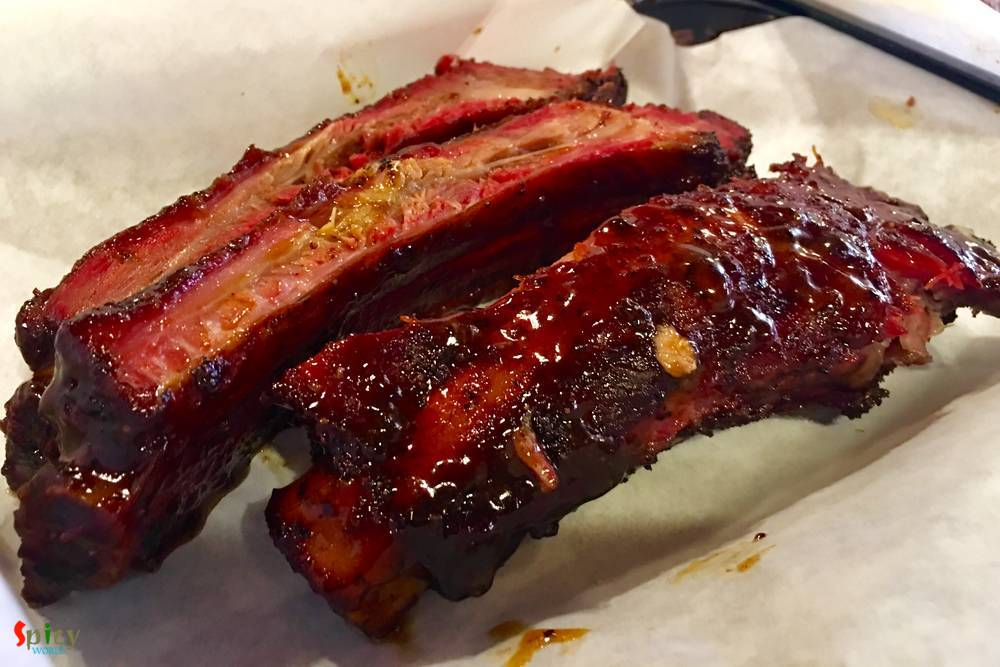
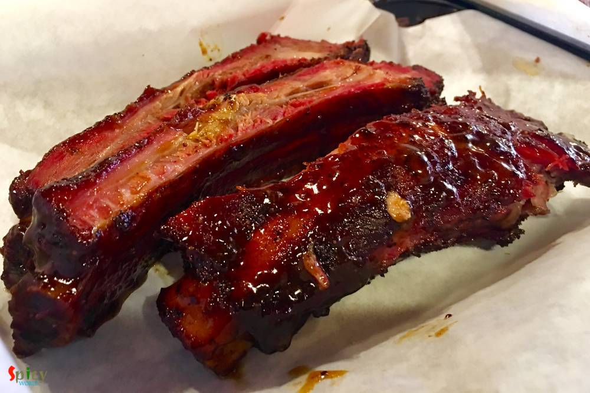
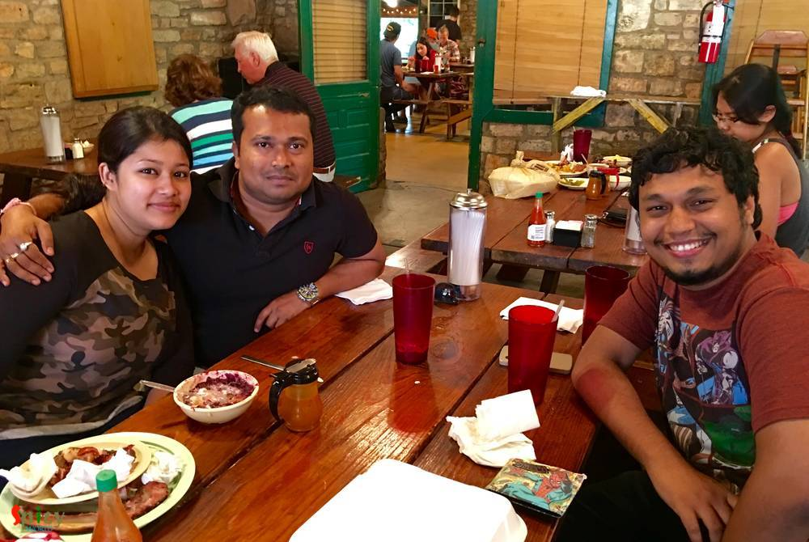
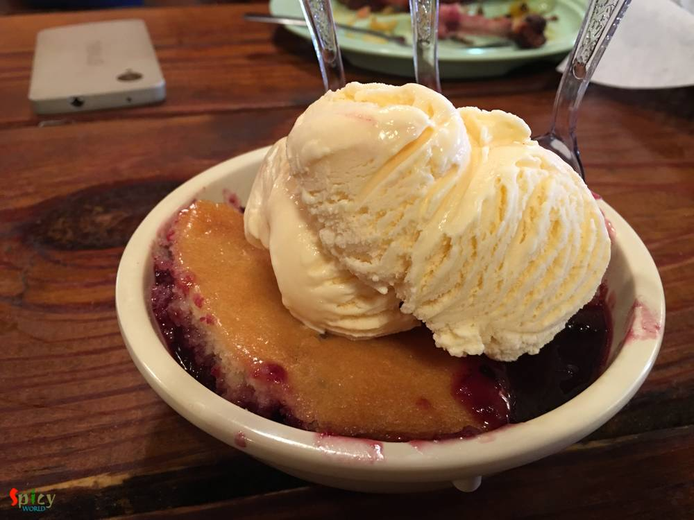

Simple and Easy Recipes
Texas BBQ Experience / Long Weekend Fun with Food Day 2
© 2016 Spicy World, Published on: Jul 4, 2016
Texas is famous for the Barbecue, we keep on hearing this for long time!! We were planning to have it tasted to justify what we are hearing. We decided to use this 4th July long weekend to taste that. And once again it's Subhodip, our friend who found one of the best spot around the city. We truly enjoyed the BBQ. While coming back we also visited Radha Madhav Dham.

Day 2 of this long weekend started with a 40 miles drive from our place to Salt Lick BBQ Driftwood Texas. As this is summer, so we recommend, you must go with lighter dress and must wear sunglass to avoid sun. When we arrived it was a different feeling, smell was awesome around the place. Its the wood burning smell with the aroma of meat and BBQ sauce.

At the time of checkin they gave a nice pager which glows with red LED and vibrates once our wait time comes to an end. We returned the pager and they took us into one of the wooden building and placed us in table.
While entering the building we noticed the Indoor Pit which is a massive one and can hold lot of meat inside. We saw some finest chefs are busy cutting meats and platting them with various sides and garnishments. The place was fully crowded and by looking at the face of the guests it seems everyone was equally excited and enjoying the food.

Now its time to order, we were a bit confused what to order (Full Menu) but then decided to touch everything. The menu was excellent and we choose things from "MEAT BY THE POUND" section and ordered, 1/2 lb BRISKET $10.95), 1/2 lb PORK RIBS ($6.95), 1/2 lb SAUSAGE ($5.95), HALF CHICKEN ($6.95), ONE DOUBLE CUT BEEF RIB ($12.95) we also include the awesome soft bread and a bowel of smashed potatoes which reminds bengali style "alu bhate" which has potato and onion smashed together.


 
It took about 15 - 20 minutes for the food to appear, and once it's served all 3 of us just pounced on it and started digging. It was tasty, well cooked, sauces are added in proper proportion nothing is too much or too less. In one word just AWESOME!!!! We ordered a desert which we don't like a lot but liked the ice cream on top of it. Overall experience was awesome and fantastic.
After such a nice food, if you want you can enjoy the live music which is happening right at the spot outside the eating area where you can sit, relax, bring your own beer or buy wine form the local vineyard beside the place. Over all it was nice experience and now its time to head back to Austin, on the way we make a quick stop at "Radha Madhav Dham" spent about 20 minutes inside the temple, we liked the calmness and the ambience of the temple.

Tags:travel